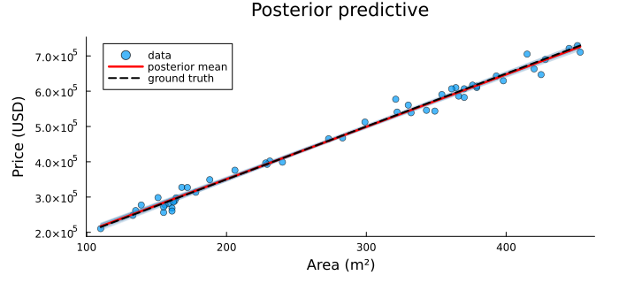
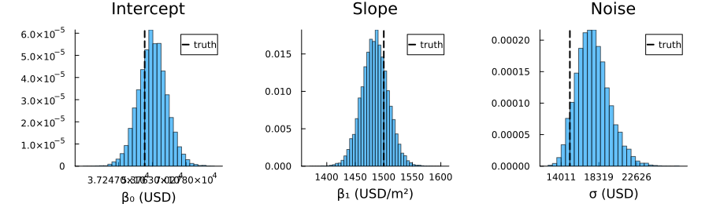

Bayesian Linear Regression: House Price Prediction
We extend the coin-flip pattern to a multivariate problem: inferring the parameters of a linear price model from noisy observations. The same MonteCarloX.jl accept! interface handles the posterior ratio — prior plus likelihood — without any normalizing constant.
\[y = \beta_0 + \beta_1 x + \varepsilon, \qquad \varepsilon \sim \mathcal{N}(0,\sigma^2)\]
using Random, Statistics, Distributions, Plots
using MonteCarloXCI parameters
const CI_MODE = get(ENV, "MCX_SMOKE", get(ENV, "MCX_CI", "false")) == "true"
n_steps = CI_MODE ? 1_000 : 100_000
burn_in = CI_MODE ? 200 : 10_00010000Synthetic data
We generate 50 house prices from a known ground-truth model. Working on a normalized scale improves numerical stability and keeps the prior specification simple and scale-free.
β0_true, β1_true, σ_true = 50_000.0, 1_500.0, 15_000.0 ## USD, USD/m², USD
rng = MersenneTwister(42)
n = 50
x = Float64.(rand(rng, 90:460, n))
y = β0_true .+ β1_true .* x .+ σ_true .* randn(rng, n)
x_mean, x_std = mean(x), std(x)
y_mean, y_std = mean(y), std(y)
x_norm = (x .- x_mean) ./ x_std
y_norm = (y .- y_mean) ./ y_std
println("Houses: $(n), price range: \$$(round(Int, minimum(y))) – \$$(round(Int, maximum(y)))")
println("Ground truth: β₀ = $(β0_true), β₁ = $(β1_true) USD/m², σ = $(σ_true) USD")Houses: 50, price range: $210486 – $729281
Ground truth: β₀ = 50000.0, β₁ = 1500.0 USD/m², σ = 15000.0 USDModel and priors
Parameters are estimated on the normalized scale. We use weakly informative Normal priors and sample $\log\sigma$ to enforce positivity.
prior_β0 = Normal(0, 1)
prior_β1 = Normal(0, 1)
prior_logσ = Normal(log(0.5), 1)
function loglikelihood(θ)
β0, β1, logσ = θ
σ = exp(logσ)
return -0.5 * sum((y_norm .- (β0 .+ β1 .* x_norm)).^2) / σ^2 - n * logσ
end
logprior(θ) = logpdf(prior_β0, θ[1]) + logpdf(prior_β1, θ[2]) + logpdf(prior_logσ, θ[3])
logposterior(θ) = logprior(θ) + loglikelihood(θ)logposterior (generic function with 1 method)Metropolis sampling
A coordinate-wise Gaussian random walk proposes new parameter vectors. The three-parameter posterior is explored jointly; accept! evaluates the log-posterior ratio and updates the acceptance counter automatically.
function run_metropolis(logposterior; seed=2026, Δ=0.05)
rng = MersenneTwister(seed)
alg = Metropolis(rng, logposterior)
θ = [rand(rng, prior_β0), rand(rng, prior_β1), rand(rng, prior_logσ)]
samples = [Float64[] for _ in 1:3]
for _ in 1:burn_in
θ_new = θ .+ Δ .* randn(rng, 3)
accept!(alg, θ_new, θ) && (θ = θ_new)
end
reset!(alg)
for _ in 1:n_steps
θ_new = θ .+ Δ .* randn(rng, 3)
accept!(alg, θ_new, θ) && (θ = θ_new)
push!.(samples, θ)
end
return samples, alg
end
samples, alg = run_metropolis(logposterior)
println("Step size Δ : 0.05 (all parameters)")
println("Acceptance rate : ", round(acceptance_rate(alg); digits=3))
println("Samples collected : ", length(samples[1]))Step size Δ : 0.05 (all parameters)
Acceptance rate : 0.143
Samples collected : 100000Back-transform to SI units
Posterior samples on the normalized scale are analytically mapped back to the original units, preserving the full posterior uncertainty.
β1_si = (y_std / x_std) .* samples[2]
β0_si = y_mean .+ y_std .* samples[1] .- β1_si .* x_mean
σ_si = y_std .* exp.(samples[3])
for (name, s, truth, unit) in [
("β₀", β0_si, β0_true, "USD"),
("β₁", β1_si, β1_true, "USD/m²"),
("σ", σ_si, σ_true, "USD")]
lo, hi = round.(quantile(s, [0.025, 0.975]); digits=0)
println("$(name) = $(round(mean(s); digits=1)) [$(lo), $(hi)] $(unit) (truth: $(truth))")
endβ₀ = 53806.0 [40129.0, 67619.0] USD (truth: 50000.0)
β₁ = 1484.3 [1439.0, 1530.0] USD/m² (truth: 1500.0)
σ = 17650.2 [14478.0, 21752.0] USD (truth: 15000.0)Posterior predictive
Overlaying 80 randomly drawn regression lines against the data visualises posterior uncertainty. The posterior mean line recovers the ground truth well.
xline = range(minimum(x), maximum(x); length=200)
n_lines = min(80, length(β0_si))
idx = rand(1:length(β0_si), n_lines)
plt_pred = scatter(x, y; alpha=0.7, ms=4, label="data",
xlabel="Area (m²)", ylabel="Price (USD)",
title="Posterior predictive", size=(700, 320),
margin=5Plots.mm)
for i in idx
plot!(plt_pred, xline, β0_si[i] .+ β1_si[i] .* xline;
lw=1, alpha=0.08, color=:steelblue, label="")
end
plot!(plt_pred, xline, mean(β0_si) .+ mean(β1_si) .* xline;
lw=2.5, color=:red, label="posterior mean")
plot!(plt_pred, xline, β0_true .+ β1_true .* xline;
lw=2, color=:black, ls=:dash, label="ground truth")
Posterior marginals
Diagonal panels show the marginal posterior for each parameter; dashed lines mark the ground truth. All three parameters are well recovered.
function marginal_panel(s, truth, xlabel, title; ticks=nothing)
p = histogram(s; bins=50, normalize=:pdf, alpha=0.6, label="",
xlabel=xlabel, ylabel="", title=title,
size=(300, 220))
ticks !== nothing && plot!(p; xticks=ticks)
vline!(p, [truth]; lw=2, ls=:dash, color=:black, label="truth")
return p
end
t3(s) = round.(range(quantile(s, 0.01), quantile(s, 0.99); length=3); digits=0)
p_β0 = marginal_panel(β0_si, β0_true, "β₀ (USD)", "Intercept"; ticks=t3(β0_si))
p_β1 = marginal_panel(β1_si, β1_true, "β₁ (USD/m²)", "Slope")
p_σ = marginal_panel(σ_si, σ_true, "σ (USD)", "Noise"; ticks=t3(σ_si))
plot(p_β0, p_β1, p_σ; layout=(1,3), size=(900, 260), margin=5Plots.mm)
This page was generated using Literate.jl.